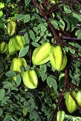

スターフルーツの生産量
いちばん多くとれる都道府県
スターフルーツが日本でいちばん多くとれるのは沖縄県です。26 tで、これが全国でとれる分のすべてです。

| 順位 | 都道府県 | 収穫量 | 全国に占める割合 |
|---|---|---|---|
| 1位 | 沖縄県 | 26 t | 100% |
この数字について
- 分類：カタバミ科
- 全国の収穫量：26 t
- この数字が表すもの：収穫量（畑や田でとれた重さ）
- 調査：特産果樹生産動態等調査 令和5年産
- この品目は統計に上位3産地しか載っていません。4位以下は国が公表していないため分かりません。
- 産地の量は1t単位に丸めて公表されています（全国の量は0.1t単位）。とれた量が少ない品目では、丸めのせいで産地の量が全国を少し超えることがあります。割合に「約」を付けているのはそのためです。